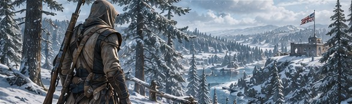

Protagonista
Ratonhnhaké:ton (Connor)
Un joven mohawk que adopta el nombre Connor y se convierte en Asesino.
En las colonias americanas, Connor se ve arrastrado a un conflicto que cambiará el nacimiento de una nación. Su lucha personal se cruza con la Revolución americana y con la guerra secreta entre Asesinos y Templarios.
En las colonias americanas, Connor se ve arrastrado a un conflicto que cambiará el nacimiento de una nación. Su lucha personal se cruza con la Revolución americana y con la guerra secreta entre Asesinos y Templarios.
Este dossier reúne los personajes, el contexto histórico, los lugares y las actividades que definen esta entrega. La información está organizada para descubrir el juego sin perderse entre sus distintas capas.
Las figuras que dan forma a la historia de Assassin’s Creed III.

Un joven mohawk que adopta el nombre Connor y se convierte en Asesino.
Un hombre carismático cuya verdadera posición altera la perspectiva de la historia.
Un antiguo Asesino que guía a Connor y le ayuda a reconstruir la Orden.
Comandante del Ejército Continental y figura de la Revolución.
Revolución americana · 1754–1783 · Una recreación histórica que combina acontecimientos reales y ficción.
La historia recorre décadas de tensiones en Norteamérica. Connor intenta proteger a su comunidad y comprender las fuerzas que manipulan el conflicto, mientras participa en acontecimientos históricos de la Revolución.
Regiones, ciudades y escenarios que dan personalidad a esta aventura.
Puerto colonial marcado por protestas y presencia militar.
Ciudad estratégica durante la guerra y escenario de operaciones.
Bosques, asentamientos y naturaleza salvaje donde cazar y explorar.
Comunidad que Connor ayuda a desarrollar.
Los sistemas principales que definen la forma de jugar esta entrega.
Hachas, espadas, cuchillos y herramientas de combate cuerpo a cuerpo.
Obtener pieles y recursos para comerciar o fabricar objetos.
Capitanear el Aquila en misiones marítimas.
Escalar árboles, riscos y estructuras del entorno.
Ayudar a artesanos y habitantes para desarrollar la comunidad.
Combates entre barcos, mejoras de la nave y rutas marítimas.
Qué hacemos durante la aventura, cómo exploramos el mundo y qué sistemas conviene dominar.
Investigar ciudades y puestos militares, sincronizar atalayas, explorar la Frontera, rastrear animales, encontrar túneles y documentos, ayudar a los habitantes del Homestead y preparar rutas de infiltración.
Detalles y sistemas especiales que merece la pena descubrir durante la exploración.
Las misiones del Homestead cuentan historias de los habitantes que se unen a la comunidad.
Los pivotes y ciertos desafíos conectan con elementos del Animus y del presente.
La Frontera contiene rutas, cuevas y coleccionables alejados de las ciudades.
ARCHIVO EN AMPLIACIÓN · Se añadirán ubicaciones concretas y capturas propias a medida que se complete la documentación de cada juego.
Introdujo la navegación naval a gran escala, la caza y una ambientación revolucionaria con mayor variedad de entornos.